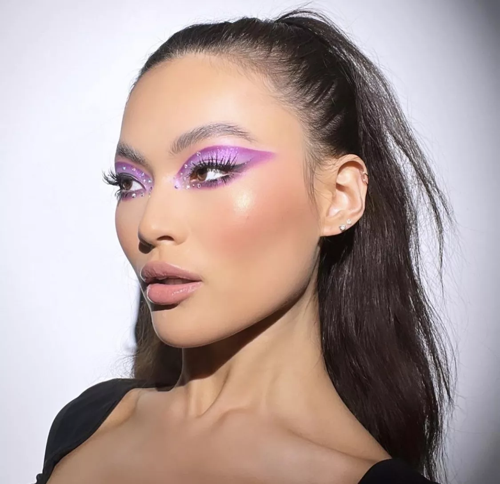
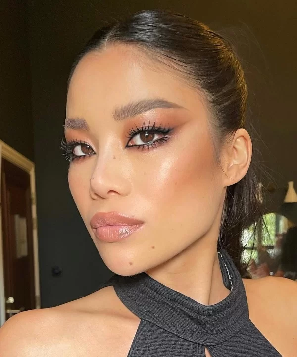

Aqui você encontrará opções diversas de produtos de maquiagens, com o passo a passo para você arrasar da próxima vez!
A maquiagem é uma forma de fazer com que se sinta maravilhosa! Tem o objetivo de embelezá-la, mas em várias culturas ela tem finalidades cerimoniais e religiosas.
 O primer é um item que serve para preparar a pele para a maquiagem. Sua principal função é suavizar a textura da pele, preencher poros e linhas de expressão para que ao aplicar o produto de make, ela fique com um aspecto natural e com o acabamento mais bonito.
Veja alguns primers no link abaixo:
PrimerAs bases no geral são usadas para deixar a pele com um tom uniformizado. Elas podem cobrir manchas, alterar o tom da pele e uniformizar a textura da cútis.
Veja algumas bases no link abaixo:
BaseO corretivo é útil para dar uma cobertura extra naquela espinha que está um pouco avermelhada, disfarçar olheiras, iluminar ou sombrear pontos do rosto na hora de fazer o contorno.
Veja alguns corretivos no link abaixo:
CorretivoO blush tem como função deixar a pele corada, com um toque levemente avermelhado, assemelhando um aspecto natural.
Veja alguns brushs no link abaixo:
BushO pó facial translúcido apresenta uma textura leve e sem cor. Ele tem função matificante e faz com que a maquiagem fique mais seca, retirando o brilho extremo da pele.
Veja alguns pós translúcidos no lnk abaixo:
Pó translúcidoO contorno consiste em dar profundidade para as feições do rosto, dando um toque mais harmonioso e bem desenhado ao rosto.
Veja alguns contornos no link abaixo:
ContornoA função do iluminador é realçar a maquiagem em regiões estratégicas do rosto, criando “pontos de luz.
Veja alguns iluminadores no link abaixo:
IluminadorÉ o produto perfeito para preencher espacinhos e falhas entre os fios, além de dar mais volume e valorizar o formato das suas sobrancelhas.
Veja algumas sombras para sobrancelhas no link abaixo:
Sombra para sobrancelhaA sombra acrescenta profundidade e dimensão, complementa a cor, ou simplesmente chama a atenção para a região dos olhos.
Veja algumas sombras para área dos olhos no link abaixo:
Sombra para os olhosTem a finalidade de destacar os olhos dando efeito alongado ou volumoso para os cílios, ou realçando a cor dos mesmos.
Veja algumas máscaras de cílios no link abaixo:
Máscara de cíliosO batom foi criado para dar principalmente cor aos lábios.
Veja alguns batons no link abaixo:
Batom